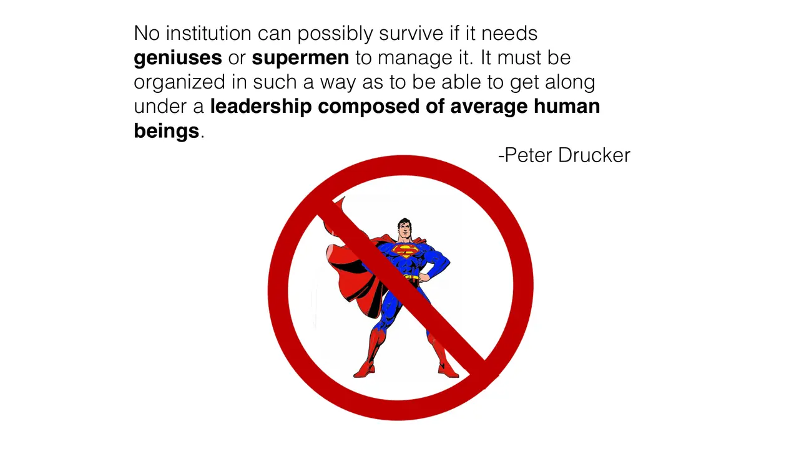
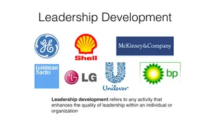
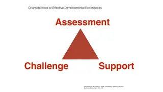
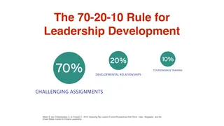
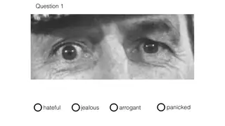
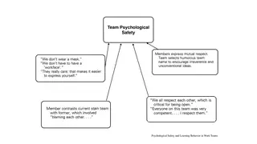

Tajer Holdings board plan
Small groups play the bank's leadership development advisory committee and present a plan that runs from strategy, to capabilities, to competencies, to development experiences.
Executive education
How organizations build leaders, and how leaders build teams that speak up
This was the opening course of the 2014 to 2015 executive education season, taught with Tom Emerson and Starling Hunter. My two sessions covered leadership development and leading teams. For the first I wrote a short case set in a Gulf investment bank, and small groups had to design its leadership development program using assessment, challenge, and support. The second used the Reading the Mind in the Eyes test, the collective intelligence research, and IDEO's shopping cart project to get at psychological safety.

slides from the decks
I taught from
Fall 2014 (September 28 to 30) · Three mornings, 8:00 to 1:00, at CMU-Q
Scroll the schedule and the slides follow along: five from each session, picked from the decks I taught from.








What students hand in
Small groups play the bank's leadership development advisory committee and present a plan that runs from strategy, to capabilities, to competencies, to development experiences.
Offerings